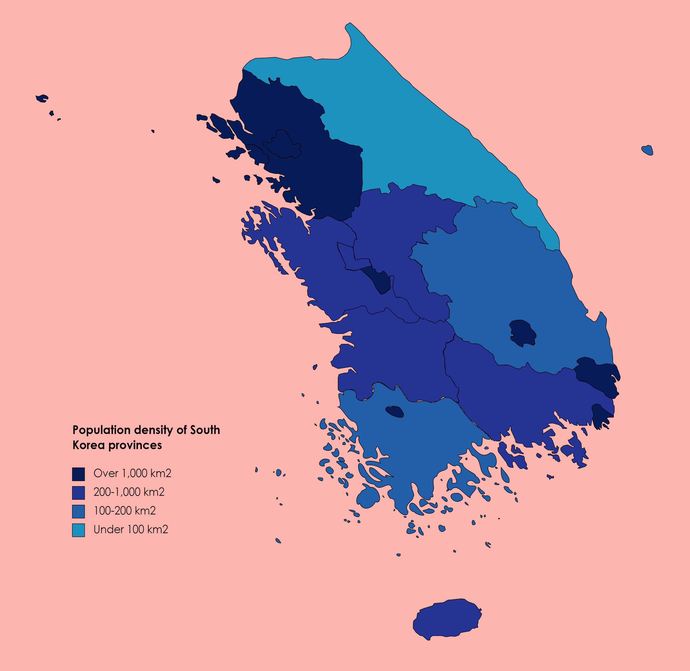
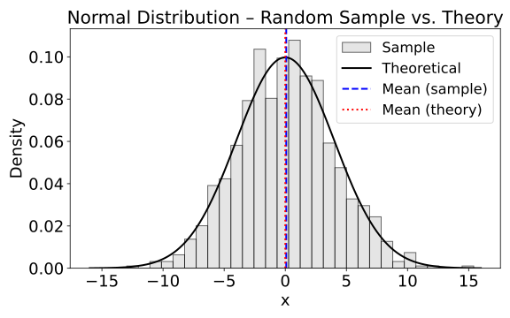

2026.04 · Pebblous Data Communication Team
Reading time: ~15 min · 한국어
Executive Summary
Released on April 20, 2026 by Dr. Hyunwoo Kim of NVIDIA (SNU PhD, incoming assistant professor at KAIST AI), Nemotron-Personas-Korea is a dataset of 7 million synthetic personas grounded in official Korean statistics (KOSIS, Supreme Court, National Health Insurance Service, KREAI). Unlike translation-based Korean datasets (KoAlpaca, KULLM), this is the first large-scale natively Korean persona resource — built from actual Korean population distributions via a PGM (Probabilistic Graphical Model) + Gemma-4-31B hybrid pipeline — and it reached #1 trending across all of HuggingFace.
According to research, demographic-grounded persona alignment reduces alignment error in social simulations by 37.9–49.8% (arXiv:2509.10127). With the Korean government pursuing a $735B sovereign AI strategy and the AI Basic Act now in effect (Jan 2026), this dataset marks the first concrete milestone in data independence.
At the same time, challenges remain: synthetic data bias amplification (arXiv:2403.07857), independence assumptions between demographic variables, and the exclusion of under-19 personas. DataClinic's distribution diagnostics — quantitatively verifying demographic consistency and preempting bias feedback loops — holds strategic value in bridging this gap.
The key figures reveal both the scale and research significance of this dataset at a glance.
7M
Synthetic Personas
26
Structured Fields
~49.8%
Alignment Error Reduction
$735B
Korea Sovereign AI
01
Nemotron-Personas-Korea: What It Is and Why #1
Released on April 20, 2026, Nemotron-Personas-Korea became the #1 trending dataset across all of HuggingFace. Among the 450,000–500,000 datasets on HuggingFace, no large-scale Korean-specific persona dataset had previously achieved an overall #1 ranking. What distinguishes this dataset is not its scale (7M) but its structure.
1.1 The PGM + LLM Hybrid Pipeline
Construction proceeds in two stages. First, a PGM (Probabilistic Graphical Model) samples demographic distributions directly from official Korean statistics (KOSIS 2020–2026, Supreme Court name distributions, National Health Insurance Service, KREAI) to generate 1 million records of structured attribute combinations. Then Gemma-4-31B transforms each attribute combination into 7 types of Korean narrative personas. The key is probabilistic sampling that reflects actual population distributions — not simple uniform sampling.
The final dataset contains 26 structured fields (demographics 12 + persona 7 + attributes 6 + UUID 1), spanning 17 metropolitan cities and provinces, 252+ counties and districts, 2,000+ occupations, and ~209,000 unique names (118 surnames + 21,400+ given names). The age range is 19–99, and the CC BY 4.0 license permits free commercial use.
1.2 Why It Reached #1 on HuggingFace
Five conditions converged simultaneously rather than a single factor driving the #1 ranking. First, the simultaneous release with Nemotron Developer Days Seoul (Apr 21–22, 500+ attendees) caused an initial download surge. Second, the NVIDIA org account brand effect (55,600 followers) accelerated distribution. Third, there was a supply vacuum — no large-scale Korean persona dataset existed. Fourth, the CC BY 4.0 license removed commercial use barriers. Fifth, the timing aligned with Korea's sovereign AI policy momentum. The NVIDIA AI official X account directly confirmed the #1 trending status.
1.3 A Paradigm Shift from Existing Korean Datasets
Existing Korean LLM datasets and Nemotron-Personas-Korea are fundamentally different kinds of resources. KoAlpaca (~20K, translation-based) and KULLM v2 (tens of thousands of records, GPT-4/Dolly translations) are English instructions translated into Korean — a process that loses Korean cultural context. Nemotron-Personas-Korea, by contrast, starts from official Korean statistics and generates Korean text natively.
The table below summarizes this structural difference.
| Attribute | Nemotron-Personas-Korea | PersonaHub | KoAlpaca / KULLM |
|---|---|---|---|
| Scale | 7M (1M × 7 types) | 1B (English) | ~20K / tens of thousands |
| Source | Official Korean statistics (KOSIS, Supreme Court) | Web crawling | English translation |
| Attribute Fields | 26 structured | 3–5 unstructured | Instruction-response pairs |
| Demographic Alignment | PGM-based distribution sampling | None | None |
| License | CC BY 4.0 | CC BY-NC-SA 4.0 | Various |
| Use Case | Agent simulation, cultural alignment | General-purpose personas | SFT / instruction tuning |
It is important to note that Nemotron-Personas-Korea is a persona dataset, not an instruction dataset. Using it directly for SFT (Supervised Fine-Tuning) requires a downstream pipeline that converts personas into conversations or instruction-response pairs. In this respect, it is complementary to — not a replacement for — existing Korean instruction datasets.
02
Sovereign AI & Data Independence — Why Korea Needs It
Sovereign AI means securing national control over key AI components (data, models, infrastructure). Academically it is redefined as "network autonomy" (arXiv:2511.15734) — not full self-sufficiency, but controlling key AI components while selectively cooperating internationally. Within this framework, Nemotron-Personas-Korea is the minimum unit and first concrete implementation of "data independence."
2.1 Where Korea Stands on Sovereign AI
Korea enacted its AI Basic Act in January 2026. In August 2025, five sovereign LLM consortia were selected with KRW 240B (~$165M) in funding; a December evaluation trimmed this to four, targeting two survivors by 2027. The 2026 AI budget stands at KRW 10.1T (~$7.3B), and total investment including Samsung reaches $735B. NVIDIA plans to deploy 250,000+ GPUs in Korea.
Yet infrastructure investment alone cannot complete sovereign AI. Without training data that guarantees a model's cultural representativeness, what runs on those GPUs remains an English-biased model.
2.2 WEIRD Bias vs. Korean Demographic-Grounded Design
The Personality Trap (arXiv:2602.03334) demonstrated that LLMs systematically exhibit WEIRD bias (Western, Educated, Industrialized, Rich, Democratic) when generating synthetic populations. English-centric synthetic personas skew young, highly educated, Western, heterosexual, and center-to-progressive in orientation.
Nemotron-Personas-Korea structurally bypasses this bias. The PGM directly samples from the KOSIS actual distribution: mean age 45.2, 50s as the largest age cohort, 17 provincial distributions, and 7 education levels. DeepPersona's (arXiv:2511.07338) taxonomy-based sampling showing a 43% improvement over national statistics further validates the quantitative impact of demographic alignment.

Key Insight: The triangle of data independence consists of representativeness (reflecting Korean population distribution), diversity (2,000+ occupations, 209K names, 39 household types), and quality (zero PII, CC BY 4.0, NeMo Data Designer validation). Continuously verifying this triangle is DataClinic's role — and monitoring whether synthetic data continues to reflect real demographic shifts over time is the central challenge.
03
Transforming Social Science & Humanities Research Methods
Synthetic persona-based surveying (Silicon Sampling) offers incomparable efficiency in cost and scale compared to traditional survey methods. However, structural inconsistency and homogenization remain core challenges, and cross-validation with real surveys is essential.
3.1 The Polypersona Methodology
Polypersona (arXiv:2512.14562) is a methodology that embeds demographic and psychographic consistency into LLM survey simulations. Testing 433 personas across 10 domains with 3,568 synthetic responses showed that a small model (TinyLlama 1.1B) with LoRA + 4-bit quantization approached the performance of 7B–8B models (BLEU 0.090, ROUGE-1 0.429). Applying Nemotron-Personas-Korea's 7M personas to this methodology enables large-scale, demographically representative synthetic surveys in Korean social science research.
3.2 Limitations of Silicon Sampling and Cross-Validation
The Silicon Sampling study (arXiv:2507.02919) warns of structural inconsistency and homogenization in LLM synthetic surveys. Population-Aligned Persona research (arXiv:2509.10127) found deep persona conditioning improves response accuracy by up to 11.6%, but cross-validation against the WVS (World Values Survey) remains essential. The methodological position of synthetic persona-based surveying is "complement," not "replacement."
3.3 Concrete Research Application Scenarios
Synthetic surveys function as "complement," not "replacement." For costly pilot studies, simulation of rare population groups difficult to reach with conventional surveys, and pre-testing policy scenarios, synthetic personas offer unmatched efficiency. The specific scenarios Nemotron-Personas-Korea opens up reveal both its potential and its current limitations.
- • Korean Aging Society Policy Simulation: Synthesizing behavioral patterns of people in their 60s (7.77M) and 70s+ to pre-simulate scenario-specific impacts of welfare policies
- • Regional Extinction Research: Simulating population movement and local economic impacts using district-level personas across 252+ counties and districts
- • Pilot Studies / Rare Group Simulation: Pre-exploration of small population groups (specific occupations, specific regions) that are difficult to reach through conventional surveys
- • Limitation — Multicultural Families: The current dataset is based on Korean nationality, so immigrant/multicultural personas are not included
04
World Models & Independent Foundation Models
The PGM + LLM hybrid pipeline is a technical innovation that simultaneously achieves "statistical coherence + natural language richness." The central question of this section is: what role can this approach play in training Korea's independent foundation models?
4.1 Technical Significance of the PGM + LLM Pipeline
Prior synthetic persona generation relied on uniform or random sampling. The Population-Aligned Persona study (arXiv:2509.10127) quantitatively demonstrated that the population-aligned approach reduces social simulation alignment error by 37.9–49.8% compared to uniform sampling, and shrinks WVS response deviation by 31.7%. NeMo Data Designer (unveiled at NeurIPS 2024, with MCP tool calls + HuggingFace Hub integration in v0.5.0) makes this pipeline industrially reproducible.
4.2 Theory of Mind and Social Reasoning
The Theory of Mind survey for LLMs (arXiv:2502.06470) analyzes behavioral and representational ToM evaluation alongside safety risks. The impact of demographic-grounded persona conditioning on ToM performance is still early-stage, but it suggests potential for enhanced reasoning across diverse social contexts (age, region, occupation). The fact that 98%+ of alignment process data in Nemotron-4 340B (arXiv:2406.11704) is synthetic demonstrates NVIDIA's full adoption of synthetic-data-centric training.
4.3 Connecting to Korea's Independent Foundation Models
Korea's independent foundation model ecosystem is growing rapidly, but a structural shortage of Korean training data is a shared challenge. Polyglot-ko-5.8B's training data is just 863GB — less than 1/10 of LLaMA-2's 2 trillion tokens — and the benchmark ecosystem is still maturing from KLUE to CLIcK (1,995 Korean cultural/linguistic QA items) and KoBALT (700 MCQ, 24 phenomena). Nemotron-Personas-Korea serves as raw material for persona-conditioned dialogue generation, agent simulation, and cultural alignment fine-tuning — not direct SFT data.
- • HyperCLOVA X THINK: Trained on 6T Korean+English tokens, augmented with "targeted synthetic Korean data"
- • EXAONE 4.0 (LG AI Research, 30B): Vocabulary size redesigned from 100K to 150K
- • SOLAR Pro 2 (Upstage): The only Korean model on the Frontier LM leaderboard
- • Data Gap: Polyglot-ko-5.8B's 863GB is less than 1/10 of LLaMA-2's 2 trillion tokens
Nemotron-Personas-Korea is a synthetic persona resource for bridging this gap. Rather than direct SFT, it serves as foundational raw material for persona-conditioned conversation generation, AI agent simulation, and cultural alignment fine-tuning. The benchmark ecosystem is also maturing — from KLUE to CLIcK (1,995 Korean culture/language QA items, 60%+ difficulty for open-source models) and KoBALT (700 MCQ, 24 phenomena) — establishing increasingly rigorous evaluation criteria.

05
Limitations & Critiques
Bias propagation in synthetic data is an academically measurable risk. Demographic-grounded design is not a silver bullet — it is a “first mitigation strategy,” and must be accompanied by independent quality audits.
5.1 Fairness Feedback Loops
Wyllie et al. (arXiv:2403.07857) demonstrated empirically that Model-Induced Distribution Shift (MIDS) amplifies bias with each successive generation of synthetic data training. Even from initially unbiased data, feedback loops erode the representativeness of minority groups. Nature 2024 (Shumailov et al.) theoretically proved that iterative synthetic training causes the tail of the original distribution to vanish. A separate study (arXiv:2404.01413) showed that replacing originals with synthetics leads to model collapse, but accumulating both original and synthetic data can avert it. This means preserving original official statistics (KOSIS, etc.) is essential.
5.2 Explicit Limitations of the Dataset
These limitations can be confirmed directly in the Nemotron-Personas-Korea dataset card.
- • Excludes under-19s: Cannot be used for AI agent development targeting children or adolescents
- • Binary sex only: Gender identity and sexual orientation are not reflected
- • Independence assumption: Interaction effects between demographic variables (e.g., sex × major, region × occupation) are not modeled
- • No industry-specific personas: No specialized personas for finance, healthcare, or other sectors
- • No personality traits: Absence of Big Five and other psychological characteristics limits social simulation fidelity
5.3 Synthetic-Real Gap and Model Collapse
Silicon Sampling research (arXiv:2507.02919) warns of structural inconsistency and homogenization. The Personality Trap (arXiv:2602.03334) finds that LLM-generated personas carry inherent WEIRD bias. Gemma-4-31B is itself an English-pretrained model, so residual bias may affect Korean narrative generation. The mitigation strategy is clear: preserve original official statistics and blend them with synthetic data, while blocking feedback loops proactively through independent distribution auditing.

06
Why Pebblous Is Watching This Dataset
The arrival of Nemotron-Personas-Korea poses a question to the market: "Who verifies the quality of synthetic data?" In a world where NVIDIA generates synthetic data, infrastructure for independently diagnosing whether that data accurately represents the real population is needed. This is where Pebblous's DataClinic and DataGreenhouse naturally connect.
6.1 DataClinic Diagnosis Scenarios
Applying DataClinic's existing diagnostic capabilities to Nemotron-Personas-Korea enables quantitative verification of synthetic personas' demographic fidelity. Three concrete scenarios emerge.
- • Class-level distribution analysis: Compare actual Korean population distributions (KOSIS) against synthetic persona distributions by age, region, occupation, and education level — quantitatively identifying over/under-represented segments
- • Density contour analysis: Monitor tail distribution loss during iterative synthetic training (Nature 2024) to detect early signs of model collapse
- • Embedding manifold visualization: Analyze whether residual bias from the English-pretrained base model (Gemma-4-31B) distorts cultural clustering in Korean personas
6.2 NVIDIA (Generation) + Pebblous (Diagnosis) — A Complementary Structure
The academic basis for this complementary structure is clear. The Fairness Feedback Loops study (arXiv:2403.07857) empirically demonstrated bias amplification in synthetic data, and proposes independent distribution auditing as the mitigation strategy. DataClinic's distribution diagnostics are precisely this "automated bias auditing." DataGreenhouse's Governance Layer manages synthetic persona metadata (source institution, generation date, PGM parameters, license) — enabling governance and traceability of synthetic data assets (ISO/IEC 5259 + ISO 42001 compliant).
PebbloSim's "Vector-to-Param" patent (US 12,481,720) automatically converts data-gap coordinates into simulation parameters. DataClinic identifies demographic gaps in synthetic personas, then PebbloSim precisely fills them — creating a viable Data Flywheel.
6.3 Customer/Partner Practical Implications
When Korean conglomerates (NAVER, LG, SK, NC, etc.) pursue LLM internalization, demand arises for quality verification of training data reflecting Korean demographic characteristics. The Sovereign LLM Consortium (KRW 240B, 4 teams) will need quality certification processes when using synthetic data. Social science research teams running synthetic persona simulations will require distribution verification partners. At each of these touchpoints, the message "synthetic data also needs quality diagnosis" is delivered to the market.
6.4 Questions to Explore Next
These are the questions this report's analysis leads Pebblous to explore in the next phase.
- • Can we publish Nemotron-Personas-Korea as a DataClinic demo case, building a reference for "synthetic data quality diagnosis"?
- • Can the DataClinic Diagnosis → PebbloSim Precision Generation → DataClinic Re-diagnosis Data Flywheel form a structural moat in the synthetic persona domain that competitors cannot easily replicate?
- • In the Sovereign LLM Consortium's use of synthetic data, what government/enterprise partnership pathways exist to position DataClinic/DataGreenhouse as the data quality verification infrastructure?
- • At a moment when synthetic data quality standards remain unestablished, what academic/industry collaboration pathways exist for Pebblous to contribute to — and claim — those emerging standards?
FAQ
References
Academic Papers
- Hu et al. (2025). "Population-Aligned Persona Generation for LLM-based Social Simulation." arXiv:2509.10127.
- Amidei et al. (2026). "The Personality Trap: How LLMs Embed Bias When Generating Human-Like Personas." arXiv:2602.03334.
- Wyllie et al. (2024). "Fairness Feedback Loops: Training on Synthetic Data Amplifies Bias." arXiv:2403.07857.
- Ge et al. (2024). "Scaling Synthetic Data Creation with 1,000,000,000 Personas." arXiv:2406.20094.
- Parmar et al. (2024). "Nemotron-4 340B Technical Report." arXiv:2406.11704.
- Bondarenko et al. (2025). "Sovereign Large Language Models: Benefits, Strategies, and Regulations." arXiv:2503.04745.
- Dash et al. (2025). "Polypersona: Persona-Grounded LLM for Synthetic Survey Responses." arXiv:2512.14562.
- Shumailov et al. (2024). "AI Models Collapse When Trained on Recursively Generated Data." Nature.
- (2025). "Silicon Sampling: Representativeness and Structural Consistency in LLM Surveys." arXiv:2507.02919.
- (2025). "Sovereign AI: Rethinking Autonomy in the Age of Foundation Models." arXiv:2511.15734.
- Nguyen (2025). "A Survey of Theory of Mind in Large Language Models." arXiv:2502.06470.
- Su et al. (2024). "Nemotron-CC: Transforming Common Crawl into a Refined LLM-Training Dataset." arXiv:2412.02595.
- Kim et al. (2024). "CLIcK: Cultural and Linguistic Intelligence in Korean." arXiv:2403.06412.
- (2025). "KoBALT: Korean Benchmark for Advanced Linguistic Tasks." arXiv:2505.16125.
- (2025). "DeepPersona: A Generative Engine for Scaling Deep Synthetic Personas." arXiv:2511.07338.
- (2024). "Is Model Collapse Inevitable? Breaking the Curse of Recursion by Accumulating Real and Synthetic Data." arXiv:2404.01413.
Industry Sources
- HuggingFace Dataset Card: nvidia/Nemotron-Personas-Korea
- HuggingFace Blog: "How to Ground a Korean AI Agent in Real Demographics" (NVIDIA)
- NVIDIA Newsroom: South Korea AI Infrastructure — 250K+ GPU deployment plan (2025.10)
- NVIDIA AI on X: Nemotron-Personas-Korea confirmed #1 trending
- Asia Economy: Nemotron Developer Days Seoul coverage (2026.04.21)
Market/Policy Data
- Ministry of the Interior and Safety: Resident Registration Statistics — 51,801,449 (2024.08)
- OECD: Education at a Glance 2023 — Korea higher education attainment rate 54.5% (#1 in OECD)
- Korea Herald / Bloomberg: Korea AI-related budget KRW 10.1 trillion (2026)
- Fortune Business Insights / Mordor Intelligence: Synthetic data market $510M–$600M (2025)
- GrandView Research / ResearchAndMarkets: Synthetic data market $1.79B–$3.7B (2030–31, CAGR 31–39%)